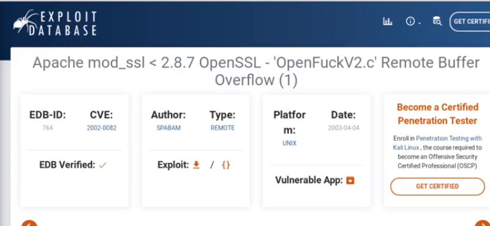

search for vulnerability and search exploit for vulnerability on google
and save them for use

we can search exploit in kali by command
searchsploit
do not search for specific exploit always search for range otherwise it may not give us exploit